01
Drafts
Two drafts testing image, rhythm and density.
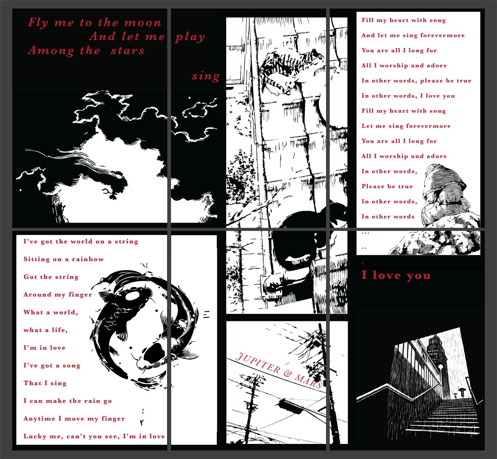
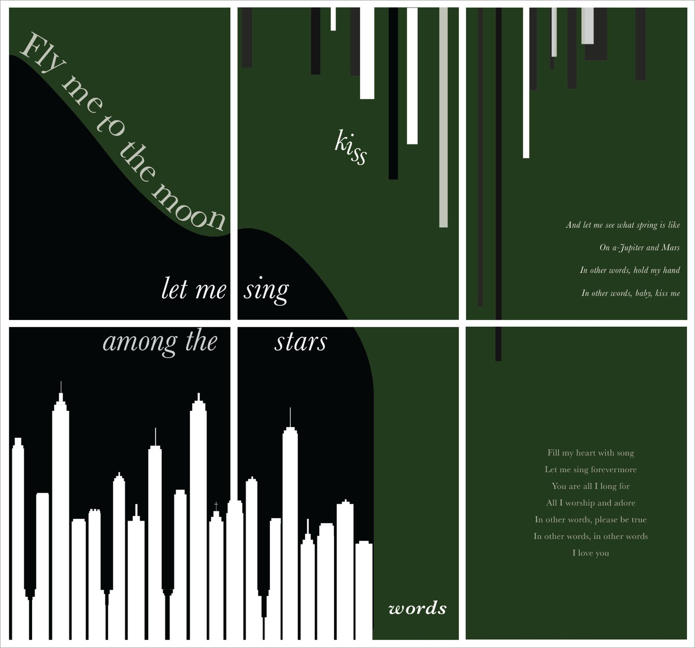
08
Six panels, then motion
Overview
Expressive typography built on the lyrics of “Fly Me to the Moon”: a six-panel structure turned into a time-based motion narrative.
BriefMake type carry rhythm, tone and emotion, so it works as both visual and verbal expression.
ApproachDynamic type placement, repetition and spatial contrast, with a limited palette and piano imagery to reinforce the musical theme. The panels were then animated in After Effects.
3 steps
Two drafts testing image, rhythm and density.


The final panels: type placement, repetition and a three-colour palette.
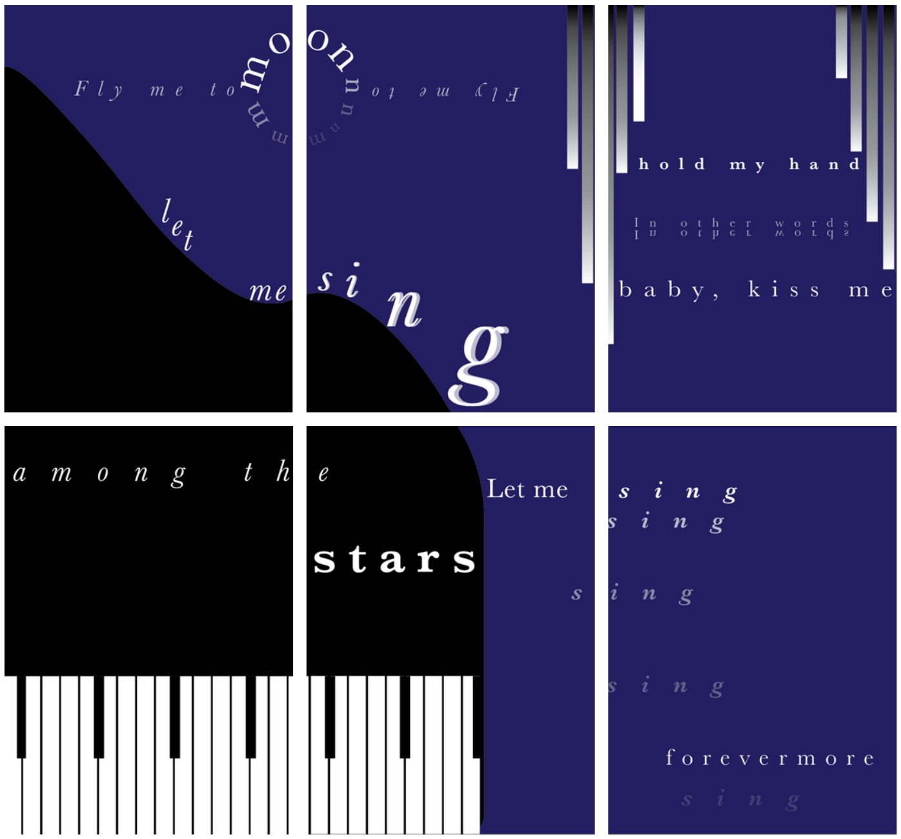
Frames from the timeline, from 00:01 to 01:06.
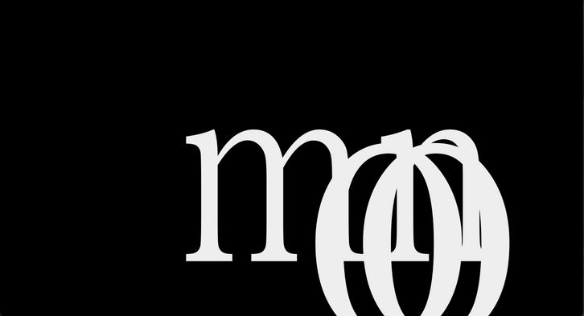
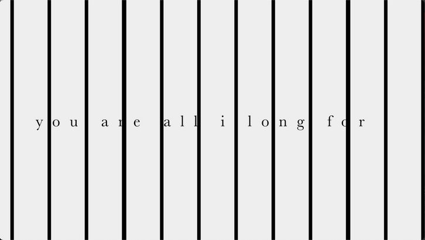
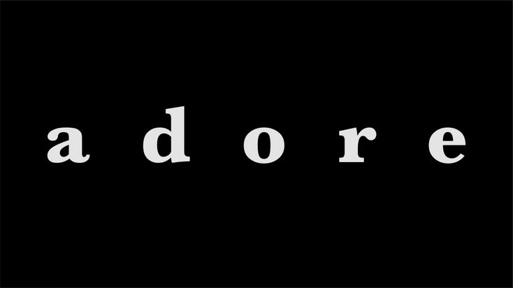
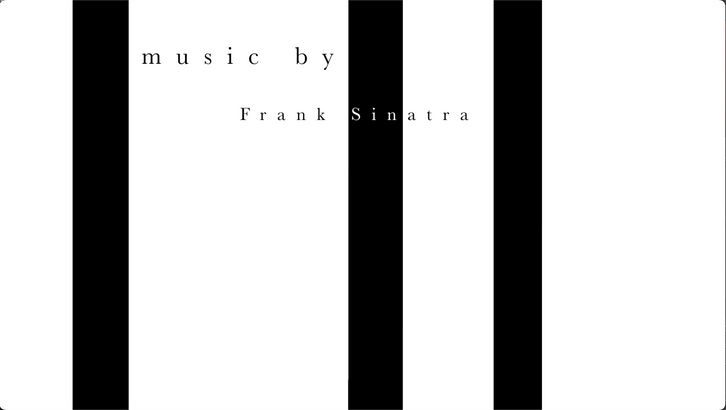
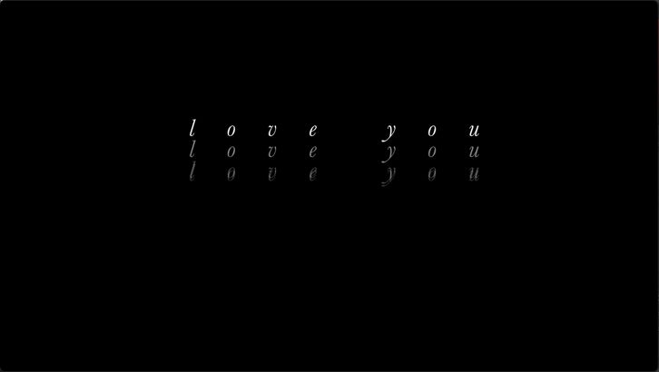
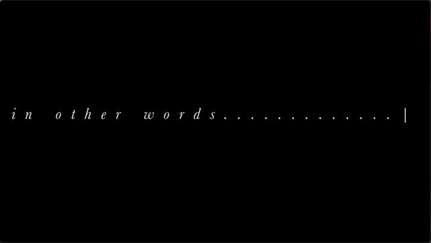
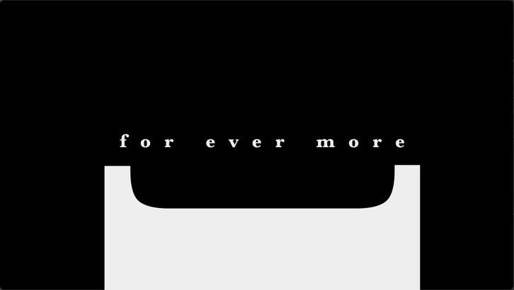
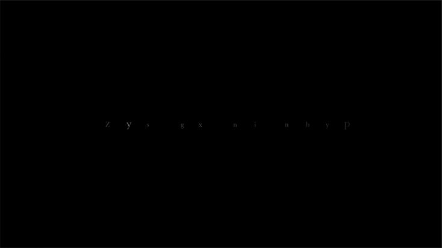